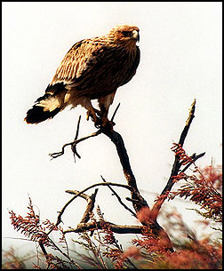

Στον ποταμό Έβρο και το Δέλτα έχουν βρεθεί 46 είδη ψαριών, 7 είδη αμφιβίων, 21 είδη ερπετών και πλέον των 40 θηλαστικών.
Αναμφίβολα όμως,η μεγάλη αξία του Δέλτα συνίσταται στην πλούσια ορνιθοπανίδα του.
Στο δέλτα του Έβρου έχουν παρατηρηθεί 308 είδη πουλιών από τα 423 είδη της Ελλάδας. Η ποικιλότητα αυτή σε είδη αποτελεί σπάνιο φαινόμενο για τα Ευρωπαϊκά δεδομένα και αποδεικνύει την μεγάλη σπουδαιότητα του Δέλτα Έβρου.
Από ορνιθολογική άποψη το οικοσύστημα λειτουργεί ως:
Παρά το ότι οι πληθυσμοί των πουλιών που φώλιαζαν κάποτε σε μεγάλους αριθμούς έχουν μειωθεί δραματικά, στο Δέλτα εξακολουθούν να φωλιάζουν είδη όπως:
Κορμοράνος (Phalacrocorax carbo), Μικροτσικνιάς (Ixobrychus minutus), Πορφυροτσικνιάς (Ardea purpurea), Σταχτοτσικνιάς (Ardea cinerea), Καστανόπαπια (Tadorna ferruginea), Βαρβάρα (Tadorna tadorna), Βαλτόπαπια (Aythya nyroca), Καλαμοκανάς (Ηimantopus himantopus), Αβοκέτα (Recurvirosta avosetta), Nεροχελίδονο (Glareola pratincola), Αγκαθοκαλημάνα (Holpopterus srinosus).
Ο Θαλασσαετός (Haliaeetus albicilla) κατά τα τελευταία χρόνια φωλιάζει ξανά στο ΄Δέλτα.
Επίσης υπάρχουν σημαντικές αποικίες από γλάρους και γλαρόνια όπως:
Γελογλάρονο (Gelochelidon nilotica), Χειμωνογλάρονο (Sterna sadvicensis), Ποταμογλάρονο (Sterna hirundo), Νανογλάρονο (Sterna albifrons).
Η μεγάλη αποικία Μαυροκέφαλων γλάρων (Larus melanocephalus) στη λιμνοθαλασσα Δράνα δεν υπάρχει πλέον λόγω των επεμβάσεων στη λιμνοθάλασσα το 1987 κατά τις οποίες φράχτηκε η είσοδος επικοινωνίας της με τη θάλλασσα και ως επακόλουθο επήλθε η μερική αποξήρανσή της. Πρόσφατα γίνονται προσπάθειες επικοινωνίας ξανά της λιμνοθάλασσας με τη θάλασσα και της λειτουργίας της σαν ιχθυοτροφείο. Οι τελευταίες παρατηρήσεις και καταγραφές πουλιών δίνουν μάλλον ενθαρρυντικά μηνύματα για τις αποικίες των Μαυροκέφαλων γλάρων στις αμμονησίδες.
Εξ άλλου το Δέλτα χρησιμεύει ως χώρος ανεύρεσης τροφής για πολλά είδη αρπακτικών που φωλιάζουν λίγο βορειότερα από τον υγρότοπο, στο δάσος της Δαδιάς και στους γύρω λόφους του Λουτρού, `Αβαντα, Αισύμης, όπως
Πετρίτης (Falco peregrinus), Φιδαετός (Circaetus gallicus), Χρυσαετός (Aquila chrysaetos), Βασιλαετός (Haliaeetus albicilla), Κραυγαετός (Aquila pomarina), Θαλασσαετός ( Haliaeetus albicilla).
Το Δέλτα του Εβρου παραμένει ένας από τους σημαντικότερους Μεσογειακούς υγρότοπους σε ότι αφορά το ξεχειμώνιασμα μεγάλων πληθυσμών από πάπιες,χήνες και άλλα υδρόβια πουλιά.Oι πληθυσμοί κυμαίνονται από 30.000-150.000 άτομα, αν και τα τελευταία χρόνια δεν ξεπερνούν τα 50.000-60.000 πουλιά.
Τα κυριότερα από τα είδη αυτά είναι:
Σφυριχτάρι (Anas penelope), Ψαλίδα (Anas acuta), Σαρσέλλα (Anas crecca), Καπακλής (Anas strepera), Πρασινοκέφαλη (Anas platyrhynchos), Βουβόκυκνος (Cygnus olor), Φαλαρίδα (Fulica atra), Ασπρομέτωπη χήνα (Anser albifrons), Λαγγόνα (Phalacrocorax pygmaeus), Αργυροτσικνιάς (Egretta alba).
Kατά την διάρκεια της ανοιξιάτικης και φθινοπωρινής μετανάστευσης πολλά είδη πουλιών σταθμεύουν στο Δέλτα για ανάπαυση ή για ανεύρεση τροφής,όπως:
Ροδοπελεκάνος (Pelecanus onoctalus), Φοινικόπτερα (Phoenicopterus ruber) τα οποία από το 1983 έχουν γίνει σχεδόν μόνιμοι κάτοικοι της περιοχής, Πελαργός (Ciconia ciconia), Μαυροπελαργός (Ciconia nigra), Χουλιαρομύτα (Platalea leucorodia), Χαλκόκοτα (Plegadis falcinellus), Ψαραετός ( Pandion haliaetus), ερωδιοί, γερανοί, πολλά παρυδάτια πουλιά γλάροι γλαρόνια και περιστέρια.
Λόγω της ευνοϊκής γεωγραφικής του θέσης, ανάμεσα στην Ευρώπη, Ασία και Αφρική, το Δέλτα αποτελεί χώρο εμφάνισης αρκετών πουλιών που συνήθως είτε δεν απαντώνται στον Ευρωπαικό χώρο είτε είναι πολύ σπάνια στην υπόλοιπη Ευρώπη, όπως:
Νανόχηνα (Anser erythropus) , Κοκκινόχηνα (Branta ruficollis), Λεπτομύτα (Numenius tenuirostris), Θαλασσαετός ( Haliaeetus albicilla) κ.ά

77 είδη αναπαράγονται ή πιθανώς αναπαράγονται στο Δέλτα Έβρου σήμερα.`Εχουν σταματήσει να αναπαράγονται 23 είδη κατά την περίοδο 1963-1991.Οι σοβαρές απώλειες ως προς την αναπαραγωγή πιθανότατα να οφείλονται:
α) Στη γενική αποξήρανση του βιοτόπου και την αλλαγή της υδρολογικής κατάστασης του δέλτα ιδιαίτερα κατά την καλοκαιρινή περίοδο.
β) Στην όχληση και διατάραξη των περιοχών φωλιάσματος από την έντονη ανθρώπινη παρουσία και δραστηριότητα. Κατά την εποχή της αναπαραγωγής τα πουλιά είναι πιό απαιτητικά ως προς τον βιότοπό τους, έχοντας ανάγκη από χώρους με αφθονία τροφής, ανενόχλητες περιοχές για φώλιασμα.
Το Δέλτα Έβρου ήταν και παραμένει σημαντικός χώρος διαχείμασης για μεγάλους πληθυσμούς από υδρόβια πουλιά. Συνολικά 145 είδη βρίσκονται τακτικά τον χειμώνα και άλλα 5 είδη εμφανίζονται συχνά αλλά όχι κάθε χρόνο.Ο αριθμός των πουλιών που διαχειμάζουν στο δέλτα ποικίλει από χρόνο σε χρόνο ανάλογα με το γενικό ύψος του πληθυσμού, την επιτυχία της προηγούμενη αναπαραγωγής και τη δριμύτητα του χειμώνα, τόσο στην Ελλάδα όσο και στην ευρύτερη περιοχή των Βαλκανίων και της Ευρώπης. Γενικά από τις καταμετρήσεις των πουλιών φαίνεται ότι ο αριθμός αυτός έχει μειωθεί κατά τα τελευταία χρόνια.
Το Δέλτα είναι ζωτικός χώρος ανάπαυσης και ανεφοδιασμού για πουλιά που μεταναστεύουν από και προς την Αφρική και την Ευρασία. Ο πληθυσμός που χρησιμοποιεί το δέλτα κατά τη μετανάστευση είναι ιδιαίτερα δύσκολο να εκτιμηθεί λόγω των μεγάλων μεταβολών σε σύντομα χρονικά διαστήματα και επίσης είναι δύσκολο να εκτιμηθούν οι όποιες μεταβολές έχουν λάβει χώρα στην κατάσταση των πληθυσμών που ματαναστεύουν.
Θα πρέπει ιδιαιτέρως να τονιστεί η παρουσία της παγκοσμίως απειλουμένης Λεπτομύτας (Numenius tenuirostris) η οποία σταθμεύει στο δέλτα Έβρου τακτικά στις μεταναστεύσεις.
46 είδη ψαριών έχουν καταγραφεί στο δέλτα και στον ποταμό `Εβρου. Από αυτά 6 είδη περιλαμβάνονται στο Annex II της Οδηγίας 92/43/EΟΚ, 12 είδη είναι ενδημικά ή τοπικά κινδυνεύοντα σύμφωνα με το "Κόκκινο Βιβλίο Απειλούμενων Σπονδυλοζώων της Ελλάδος".
Μερικά είδη έχουν αποκτήσει εμπορική αξία για τους κατοίκους της περιοχής, όπως ο κέφαλος, ο κυπρίνος, το χέλι, η γλώσσα, η τσιπούρα, το λαβράκι κ.ά.
7 είδη αμφιβίων, όλα συμπεριλαμβάνονται στο Annex IV και 2 είδη στο Annex IΙ & IV της Οδηγίας 92/43/EΟΚ.
Σε περιοχές με αρκετή υγρασία και νερά θα συναντήσουμε το λιμνοβάτραχο ή μπάμπακα, το σβελτοβάτραχο και τον μικρό καταπράσινο δενδροβάτραχο. Σε περιοχές πιο ξηρές συχνάζουν ο πρασινόφρυνος και ο χωματόφρυνος.
21 είδη ερπετών εκ των οποίων τα 6 από αυτά περιλαμβάνονται στο Annexes II & IV και 10 είδη στο Annex IV της Οδηγίας 92/43/EΟΚ.
Υπάρχουν σημαντικοί πληθυσμοί ερπετών στον υγρότοπο. Το νερό, οι όχθες και γενικά οι περιοχές με άφθονη υγρασία προσελκύουν τις βαλτοχελώνες και τις ποταμοχελώνες. Σε πιο ξηρές περιοχές παρατηρούνται οι γραικοχελώνες και οι ονυχοχελώνες, τα φίδια ( αστραπόφιδο, λαφιάτης, οχιές), οι σαύρες (τρανόσαυρα, βαλκανόσαυρα).
Περισσότερα από 40 είδη θηλαστικών έχουν καταγραφεί στο Δέλτα και τον ποταμό Έβρο, 3 από αυτά περιλαμβάνονται στο Annex IV και 5 είδη στο Annex II της Οδηγίας 92/43/EΟΚ .
Στα καθαρά νερά των καναλιών με πλούσια βλάστηση ζεί η βίδρα. Άλλα θηλαστικά που έχουν παρατηρηθεί είναι το τσακάλι, η αγριόγατα, η αλεπού, ο ασβός, η νυφίτσα, το κουνάβι και κάποιες φορές όταν οι καιρικές συνθήκες είναι εξαιρετικά δριμείς, κατεβαίνουν στο δέλτα και οι λύκοι.
Στους αγρούς και στα λιβάδια παρατηρείται ο σκαντζόχοιρος, ο τυφλοπόντικας και ο λαγόγυρος. Ο υγρότοπος φιλοξενεί διάφορα είδη νυχτερίδας όπως Pipistrellus sp., Rhinolocophus sp. Οι νυχτερίδες είναι πολύ χρήσιμες στη γεωργία αφού τρέφονται με μεγάλους αριθμούς από τα επιβλαβή για την καλλιέργεια έντομα.